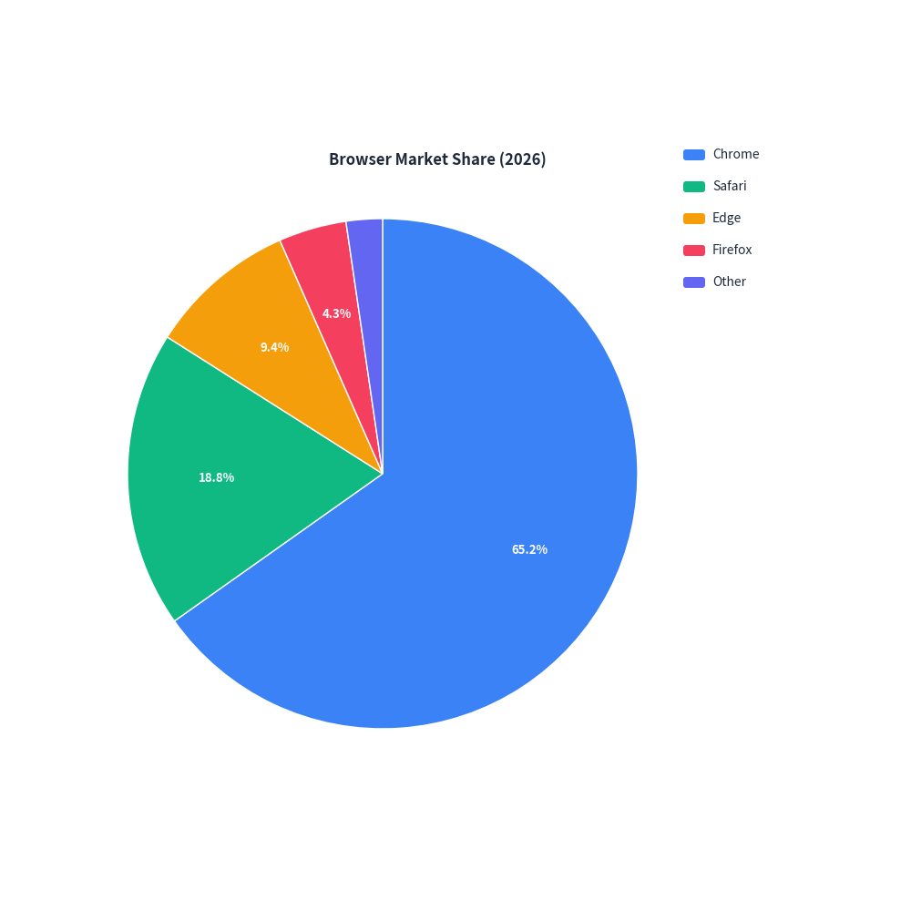
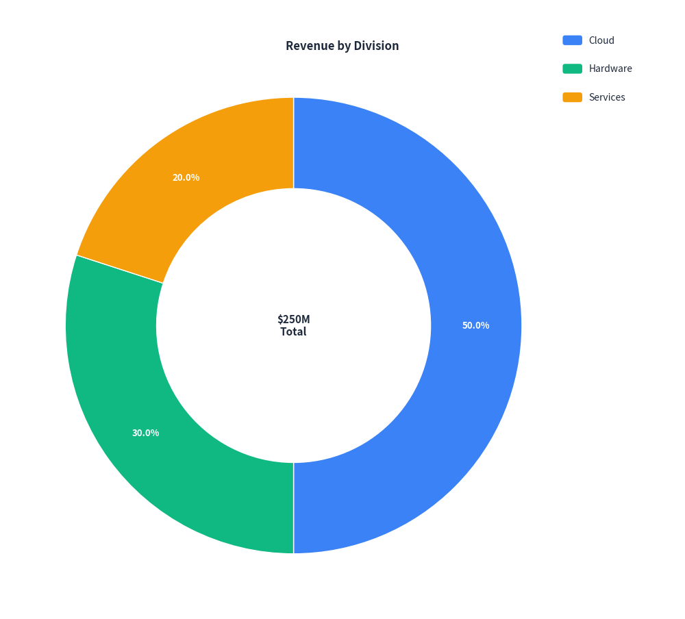
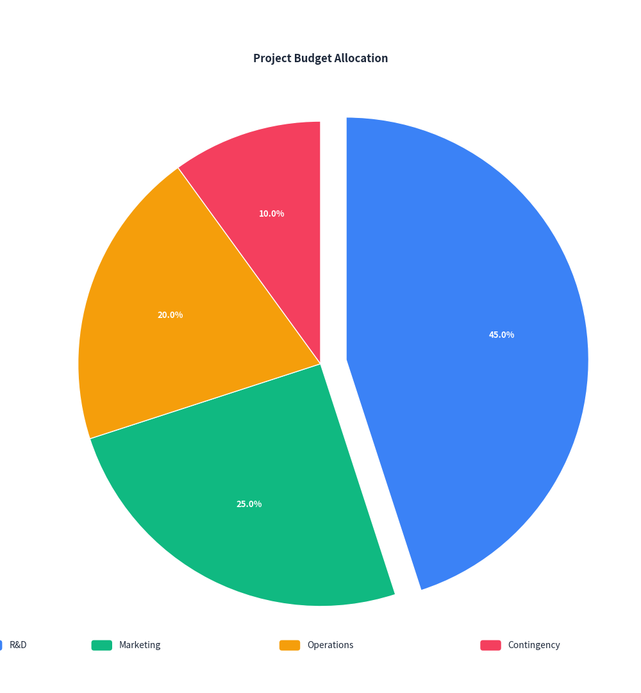

Pie & Donut Chart Guide
drawlib.charts.PieChart provides modern 2D pie and donut charts for proportional data visualization. Slices, labels, and legends are automatically formatted and laid out with fine-grained control over center badges, exploded sectors, and typography.
1. Quick Start: Standard Pie Chart
Create a clean pie chart showing proportional breakdown with automatic percentage labels and legends:
from drawlib import canvas
from drawlib.charts import PieChart
canvas.initialize()
chart = PieChart(
radius=28.0,
title="Browser Market Share (2026)",
legend_position="right",
)
chart.add_slice("Chrome", 65.2)
chart.add_slice("Safari", 18.8)
chart.add_slice("Edge", 9.4)
chart.add_slice("Firefox", 4.3)
chart.add_slice("Other", 2.3)
chart.draw(xy=(10.0, 15.0))

2. Donut Chart with Center Badge
Set hole_ratio (e.g. 0.6) to turn any pie chart into a donut chart, and display summary metrics or KPIs in the center with center_text:
from drawlib import canvas
from drawlib.charts import PieChart
canvas.initialize()
chart = PieChart(
radius=28.0,
hole_ratio=0.6,
center_text="$250M\nTotal",
title="Revenue by Division",
legend_position="right",
)
chart.add_slice("Cloud", 125.0)
chart.add_slice("Hardware", 75.0)
chart.add_slice("Services", 50.0)
chart.draw(xy=(10.0, 15.0))

3. Exploded Slices & Custom Placement
Highlight important segments by setting explode on individual slices, and reposition the legend to the bottom:
from drawlib import canvas
from drawlib.charts import PieChart
canvas.initialize()
chart = PieChart(
radius=28.0,
title="Project Budget Allocation",
legend_position="bottom",
)
chart.add_slice("R&D", 45.0, explode=3.0)
chart.add_slice("Marketing", 25.0)
chart.add_slice("Operations", 20.0)
chart.add_slice("Contingency", 10.0)
chart.draw(xy=(20.0, 10.0))

4. API Reference
PieChart
| Parameter | Type | Default | Description |
|---|---|---|---|
radius |
float |
20.0 |
Outer radius of the pie circle. |
title |
str |
"" |
Chart title displayed at the top. |
title_style |
Style | None |
None |
Optional typography Style for title text. |
hole_ratio |
float |
0.0 |
Inner hole ratio (0.0 for solid pie, 0.1–0.9 for donut ring). |
center_text |
str |
"" |
Summary text or KPI metric rendered inside the donut hole. |
center_text_style |
Style | None |
None |
Optional typography Style for center text. |
start_angle |
float |
90.0 |
Starting orientation in degrees (90.0 is 12 o'clock). |
clockwise |
bool |
True |
Whether slices progress in clockwise direction. |
show_values |
bool |
True |
Whether to print percentage labels on slices (>= 4% share). |
value_format |
str | Callable |
"{:.1f}%" |
Format string or callable formatting slice labels. |
value_label_style |
Style | None |
None |
Optional Style for slice value labels. |
legend_position |
"auto" | "top" | "bottom" | "right" | "none" |
"right" |
Position of the legend box. |
width |
float | None |
None |
Optional total container width override. |
height |
float | None |
None |
Optional total container height override. |
Methods
add_slice(name: str, value: float, color=None, style=None, explode=0.0) -> PieSlice: Add a slice segment to the chart.get_size() -> tuple[float, float]: Return the total calculated (width, height) bounding dimensions.draw(xy: tuple[float, float] = (0.0, 0.0)) -> None: Render the chart onto the canvas.